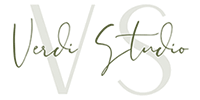
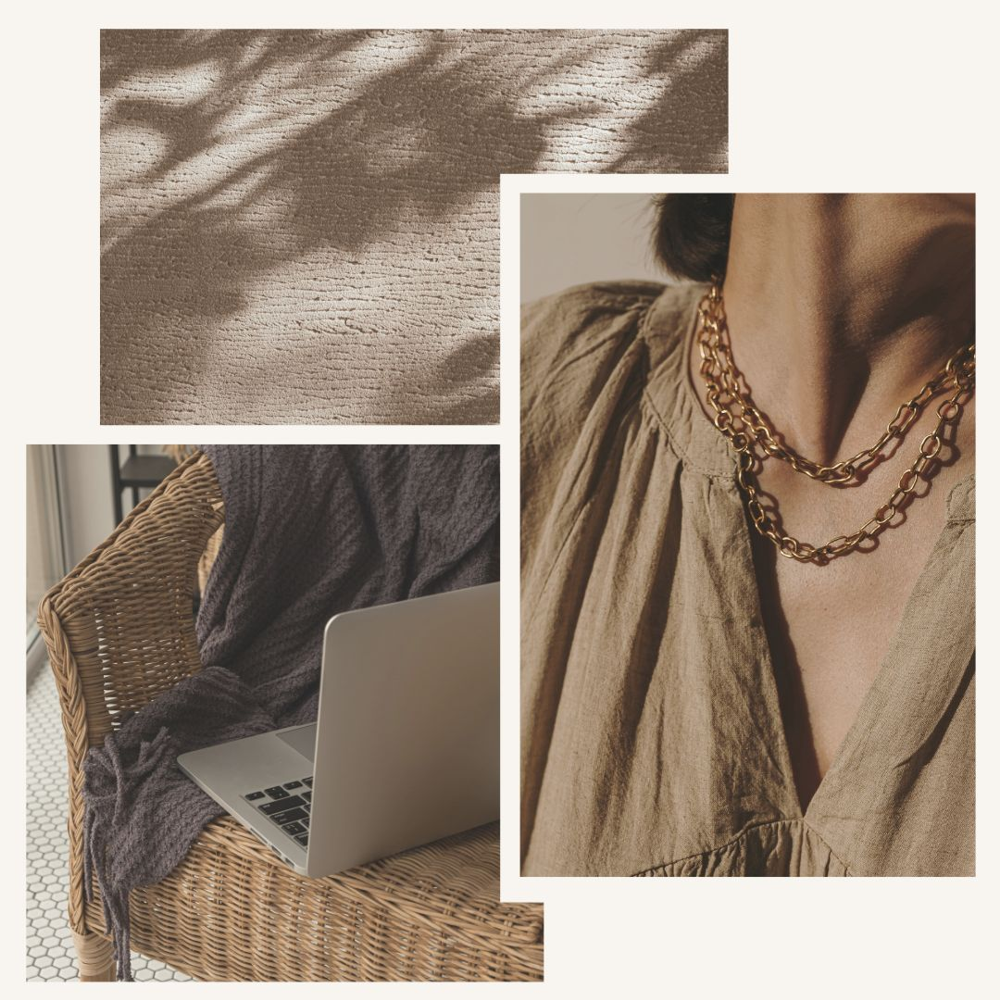
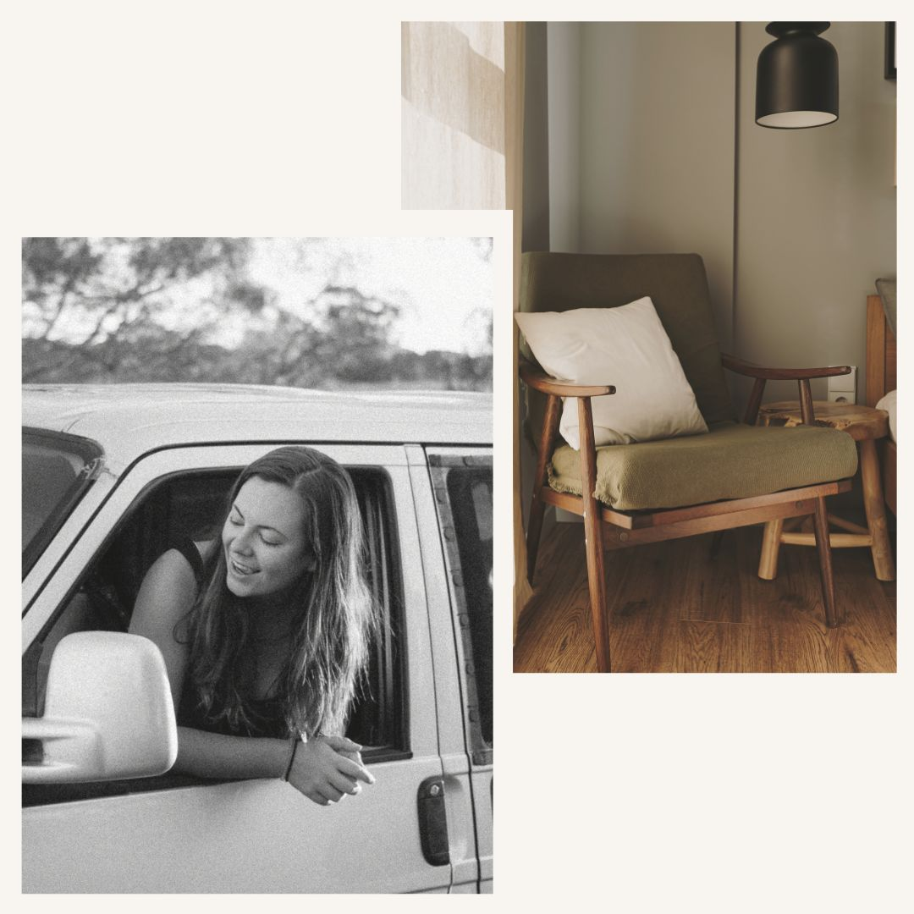

<title>VS - About Us</title>
<!------ This is where our main content starts  ------->
 <!-- Header -->
    <section class="banner-front-page border">
        <header class="grid">
            <div class="col-4">
               <a href="index.html"></a>
            </div>
            <nav class="col-8 mob-hide txtright">
                <a href="about.html"> About Us </a>
                <a href="process.html"> The Process </a>
                <a href="portfolio.html"> Our Work </a>
                <a href=""> Contact Us </a>
                <i class="fa-brands fa-instagram"></i>
                <i class="fa-brands fa-pinterest"></i>
            </nav>
            <div class="col-8 right">
                <a class="hamburger-button mob-show"> 
                    <div class="container"onclick="myFunction(this)">
                        <div class="bar1"></div>
                        <div class="bar2"></div>
                        <div class="bar3"></div>
                    </div> 
                </a>
            </div>
        </header>
    
        <div class="mobile-menu"> 
            <nav> 
                <a href="about.html"> About </a>
                <a href="process.html"> Our Process </a>
                <a href="portfolio.html"> Our Work </a>
                <a href=""> Contact Us </a>
            </nav>
        </div>

        <section class="grid txtcenter">
            <div class="col-12 padded-15">
                <h1>The Studio</h1>
            </div>
        </section>
    </section>

    <!-- Who we are -->
    <section class="grid padded light-bg border">
        <div class="col-4">
            
        </div>
        <div class="col-8 padded">
            <h2>Who We Are</h2>
            <p> We are a female-led creative studio, specialising in front-end website design and development. We partner with independent business owners across the globe to bring their brand and stories to life online, by crafting beautifully designed and well thought out websites with their unique customers/clients in mind.</p>
            <p>We consider ourselves dreamers, storytellers and adventurers and we absolutely love working with people who embody the same values as we do. Supporting Indie businesses is what we do best, and we know first-hand that your business is so incredibly personal to you. That's why we'll work closely together to ensure your website fully encaptures your values and reaches your goals. We take care of the design so that you can continue to take care of your business.</p>
            <a class="button" href="process.html">Find out more about our Process</a>
        </div>
    </section>

    <!-- Our values -->
    <section class="grid padded featured-bg txtcenter border banner-values">
        <div class="col-1"></div>
        <div class="col-10"><h2> Our Ethos </h2></div>
        <div class="col-1"></div>
        <!-- grid -->
        <div class="col-4 padded">
            <h3><i>Authenticity</i></h3>
            <p>Heart is at the core of what we do. We know you care deeply about your business, so we do too.</p>
        </div>
        <div class="col-4 padded">
            <h3><i>Curiosity</i></h3>
            <p>Look at the world in wonderment. Stay curious about people, listen to their stories and be inspired by them all.</p>
        </div>
        <div class="col-4 padded">
            <h3><i>Inclusivity</i></h3>
            <p>Play our part. Make a difference in the world. Stay inclusive, promote diversity and help the environment.</p>
        </div>
    </section>

    <!-- About the founder -->
    <section class="grid padded light-bg border">
        <div class="col-7 padded">
            <h2>About The Founder</h2>
            <p> Hello, my name is Chandler and I am the founder and lead designer behind Verdi Studio. I started with a background of Marketing/Press and PR, and then I found myself as a Web Assistant for an independent mini-department store for a couple of years. It was here that I discovered a love of being a part of a small team who have a passion for originality and for sharing stories behind the brands. I was perhaps known for being a little bit of a chatterbox in this role, with both my colleagues and our customers...</p>
            <p>I'm big fan of exploring the world, and in 2019 I took a career break to travel Australia for a couple of years with my other half, during which time we lived in a small VW Caravelle. Over the years I learnt how to code and discovered a new way of combining all my passions into one... And the concept of Verdi Studio was born.</p>
            <p>A couple of years, a change of country and a new (bigger!) campervan later, here I am. You should know that, I love listening above all else and I especially love when people are fired up about something they are passionate about. I can't wait to work together!</p>
        </div>
        <div class="col-5 padded-2">
            
        </div>
    </section>